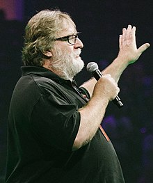
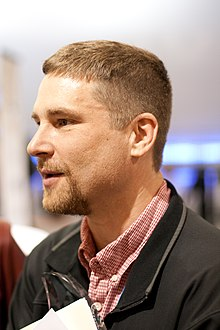

Gabe Newell was born November 3, 1962, people commonly call him "Gaben" which was a nickname of his. he attended Harvard University in the early 1980s but soon dropped out to join Microsoft where he helped create some of the first creations of windows. He became friends with Mike Harrington, another employee of microsoft and they soon both left to start there own game company, Valve. Gabe led Valve to a greater path, making games, Selling Tech , and shocking many!
Mike Harrington was born 1964, Harrington was a game programmer at Dynamix and a designer for windows NT operating system at Microsoft. In 1996 he and Gabe left microsoft to work on a game company, Valve. After the success of half life Mike slowly decided to move away from Valve, Mike couldnt risk the loss of Valve and losing thousands upon thousands of dollars so he left to go spend time with his wife. ending Gabe and his relationship.
To start this conclusion off, i'm going to repeat what I said in the homepage. everything here was from wikipedia so the things I say might not be fact. In conclusion, Valve is an amazing company and is need of more recogonition, But this is where this website ends. I 100% suggest you search for more information on Valve. Its been amazing creating this website and I hope to create more thanks to Mr McMonagle.